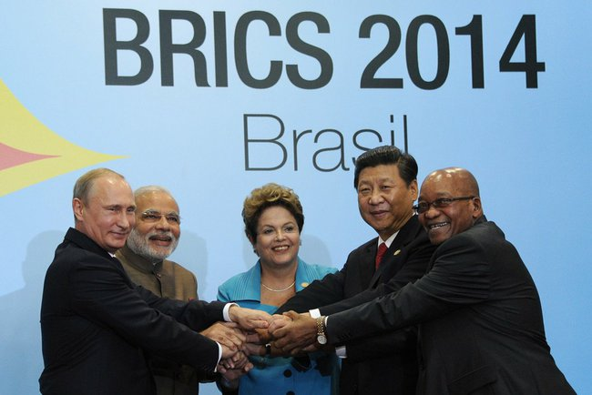

中共当然希望能釜底抽薪，打倒美元的金融霸权。但是这有实际上的困难，主要是虽然中共已经有了世界第一的经济和贸易量，工业產值更超过美国达60%以上，全球主要的金融机构都还在美国的手里，再加上网络效应，要让人民币一举取代美元是完全不可能的。连最基本的开放人民币自由交易，都有如把一把顶在自己喉咙上的利剑交到美国人手里，美国金主必然会藉机操弄匯率，打撃中共的进出口贸易。不过长期来看，让人民币逐步取代美元，是必要的，否则美国高兴抢銭就抢銭，对中共的友邦更加可以兴风作浪，深度打撃他们的经济。
其实，现代的所谓国际贮备货币，有好几个层面，人民币可以依此一步一步来走。第一步，是进出口实体贸易的定价改用人民币。这是最简单也最自然的一步，中共已是世界第一贸易国，只要有耐心，再过几年，自然可以把大部分自己的进出口贸易改用人民币来交易。不过要两个第三者也用人民币互相交易，那就须要有所谓的定价权，我待会儿再讨论。
下一步，是让人民币成为各国中央银行外匯存底的一部分。欧元早已走到这个地步，但是人民币不能自由兑换，在这方面是个麻烦。还好中共已经想出一个办法，就是和那些中央银行们一个一个地签货币交换协定。虽然很费事，但是在十年左右的将来，还是有相当的机会能达成这个目标。最新的消息是英国在上个月（2014年九月）决定把人民币列入其外匯存底之中，成为第一个这様做的主要国家（英国的倒向中共是近两年的事，详见前文《美国的欧洲代理人板块重整》）。目前IMF正在讨论是否把人民币加入SDR（Special Drawing Right，基本上是IMF的外匯存底）；美国当然是反对的，但是欧洲很赞成。SDR的下一轮变动将在2016年一月生效，所以任何变动必须在2015年决定。未来这一年的幕后角力将会是很有意思的。
再下一步，是把美国独家控制的国际机构解放出来，做到真正的多元共管。私人企业和银行是不可能做这様无私的转变的，所以中共的目标只能放在IMF和世银上。原本中共买下更多的股权的提案已经通过了IMF的股东会议，但是在今年初被美国国会否决了。（如果有读者不相信我一直说的IMF实际上完全由美国控制，那请你解释一下一个只有1/6股权的国家如何单独否决股东大会的决议？）所以中共在前两个月创立了金砖银行和亜洲投资银行。这两者都将在2015年开始运作，对被美国长期荼毒蹂躏的开发中国家，这是值得欢欣庆祝的事情。
2014年七月15日，金砖银行（New Development Bank，NDB）正式成立。美国只付IMF的1/6资金，却有100%的控制。中共则贡献了41%的资金，却只有1/5的控制权。谁正谁邪，一目了然。
再下一步，是国际天然原料的定价权，尤其是石油。俄国、委内瑞拉和伊朗是很希望从美元霸权里解脱出来的，可是控制世界石油定价的是沙乌地阿拉伯，而沙乌地对美国在军事和外交有百分之百的依赖，所以中共很可能会在这一步上卡住。美国也心知肚明，因此不管代价如何高昂，美国仍然要对中东处处干涉，以保护其对沙乌地的影响力。除非美国筋疲力尽，决心放弃霸权，他是不可能在中东放手的。这也是欧巴马的尷尬：一方面须要Pivot向亜洲，另一方面仍然须要保护自己在中东的势力。当然这并非不可能达成；最理想的就是亜洲有台湾、日本、菲律宾和越南这様的代理人，加上香港和大陆内地的崇美派闹事，如此一来，美国的硬实力就可以专注在中东。
最后一步，是全球货币交易改用人民币为标准货币。这在可见的未来，是完全不可能的。即使中共退一步，把最理想的目标设在二十年后，美元、欧元和人民币三分天下，这仍然是很困难的。就在五天前（2014年九月30日），欧元和人民币开始直接兑换，可是只有一家中方的银行愿意充当做市商（Market Maker），虽然他的买卖价差（Market Spread）稍为小于欧元换美元再由美元换人民币的价差之和，他的报价量（Market Size）很小，对大多数的客户来说，还是走美元那条弯路方便。如果连欧元都行不通，其他的小货币自然不用提了。中共唯一的希望，在于完成李克强计划用20年达成的產业完全升级，再加上军事硬实力的对外投射，那么或许在货币方面也能如愿。也就是，中共的崛起，必须在產业、军事和金融三方面，全面均衡地发展，缺一不可。
总结来看，中共在未来十年内，虽然不可能推倒美元的霸权，但是像金砖银行和亜洲投资银行是很有意义的创举，很可能会大幅削弱美国以金融手段剥削开发中国家的能力。这对世界经济来说，将是一个大福音。
【后注一】纽约时报在今天（2014年十月9日）发表了一篇文章，叫“China's Plan for Regional Development Bank Runs Into US Opposition”（“中国的区域开发银行计划遭到美国抵制”，详见http://www.nytimes.com/2014/10/10/world/asia/chinas-plan-for-regional-development-bank-runs-into-us-opposition.html?_r=0）。原来美国在幕后威胁利诱其“重要盟国”（亦即澳洲和南韩）不得加入。美国的藉口永远都是很光冕堂皇的，这次是为了“环境保护”，阻止新燃煤火电厰的建立。当然美国自己的燃煤火电厰的热效率只有40%，而中共的最新技术是世界第一的上海外三火电厰的45%，在未来几年从600 ℃升级到700 ℃超超临界技术之后，将达到50%，可是美国当然不会浪费銭像中共一様做全国火电厰的技术升级。美国有150年是世界第一的燃煤污染国，只在最近五年才因为发现了世界最大的页岩气矿床才改建燃气火电厰，现在却用这个藉口来确保自己用金融手段偷抢拐骗的自由，附带地也创立了新的国际规则：连低度开发国家也不能建燃煤火电厰；可是除非你有自己的天然气，燃煤火电厰比其他电厰便宜一半，也就是很多开发中国家将会因美国的阻挠而缺电。别的国家的经济发展出问题对美国是件好事，对世界呢？
【后注二】中国人民银行行长周小川于10月10日表示，一些国家已经开始使用人民币作为国家外匯储备货币，只是“还不愿意说出来”，其中包括一些发达国家。此前，已知将人民币作为外匯储备货币的国家为尼日利亚和白俄罗斯。欧洲央行本周将讨论是否将人民币作为其外匯储备货币之一。
发表日期 : 2014-10-05 20:03
学而时习之 留言 :
王孟源 回复:
byron 留言 :
王孟源 回复:
学而时习之 留言 :
王孟源 回复:
海熊猫 留言 :
王孟源 回复:
海熊猫 留言 :
王孟源 回复:
海熊猫 留言 :
王孟源 回复:
刘时荣 留言 :
王孟源 回复:
山猫 留言 :
王孟源 回复:
yy0c 留言 :
王孟源 回复:
世界对白 留言 :